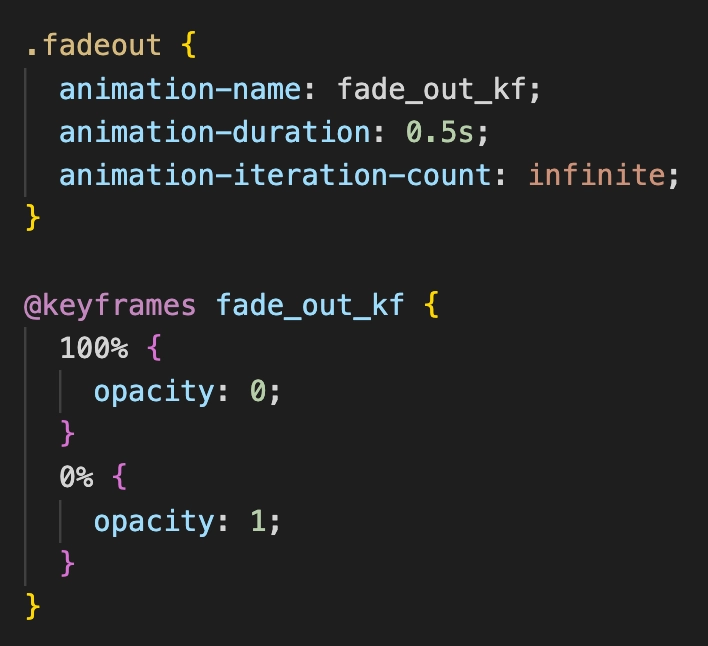

FORMÅL
Dette tema havde til formål at få en grundlæggende forståelse for design og programmering indenfor Adobe Illustrator, CSS og særligt Javascript. Med fokus på brugergrænsefladen fik vi en baggrundsviden indenfor State Machine Diagrammer, Aktivitetsdiagrammer, digital fernisering, idegenereringsteknikker, skitsering og prototyper.
KONCEPT
Spillet handler om at få drengen på månen til at falde i søvn ved at fange så mange stjerner så muligt på 40 sekunder. Hver gang man fanger en stjerne, får man et point. Fanger man ikke nogle stjerner taber man. Rammer man en sky, mister man blot et point, men rammer man et lyn mister man et liv – man har 3 liv i alt.

HIGHTLIGHTS
CSS ANIMATIONER
Her ses, hvordan klassenavnet får tildelt et animationsnavn, samt tid og gentagelse. Ved hjælp af keyframes, var jeg i stand til at lave selve fade-out effekten på min stjerne. Her beskriver jeg stjernens handling ved brug af opacity, som går fra 100% til 0%. Hovedreglen er at bevægelse sker på container elementet og forsvindingsanimationerne sker på sprite elementet.
JAVASCRIPT
Her ses et eksempel på, hvordan mit stjerne i mit spil agerer efter et klik med musen. En væsentlig del i Javascript var at vi kunne definere en variabel (her ved brug af const), som gør at vi er fri for at bruge document.querySelector , hver gang vi vil gribe fat i et element og hermed sparer hukommelse og CPU-kraft.
PROCES
FRA BLYANTSSTREGER TIL VEKTOR GRAFIK
Design processen startede med håndtegnede skitser, hvorefter jeg begyndte at designe videre i Adobe Illustrator. Jeg havde fokus på de bløde former og strøj samt runde hjørner, for at skabe det søde, uskyldige og børnevenlige udtryk. Herefter begyndte jeg at gøre brug af en masse graduering, som jeg hurtigt fandt ud af, skabte ro i billeder og figurer. Jeg har benyttet en farvepalette for at holde en rød tråd igennem spillet og skabe dynamik samt harmoni i min grafik. Jeg var særligt opmærksom på at implementere mørke farver, men med noget kontrast af lyse/gule farver, som når man kigger op på nattehimlen.